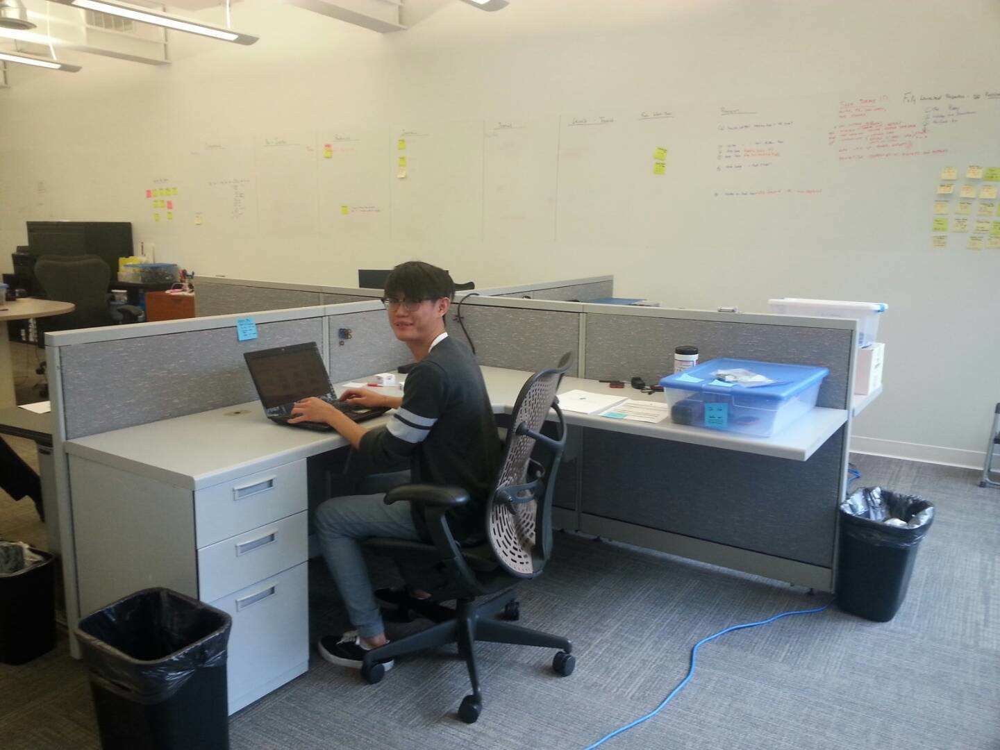
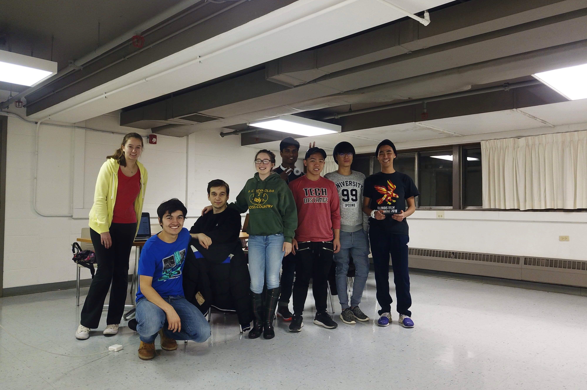

I had an exciting internship working as a big data engineering intern at Keysight Technologies during the summer of 2019. My first task was to build a big data analytics system to centralize data coming from multiple applications. I designed three prototypes to inspect the scalability, cost-effectivity, and efficiency of each system. The product of my research includes a data lake, a schema detector that builds data catalog automatically, and SQL statements for high-efficiency interactions with databases. I also built and trained two artificial neural network models (Autoencoder and XGBOD) for data pattern recognition and anomaly detection with 97% accuracy, which ultimately replaced the time taxing manual testing performed by the engineers.
Intel
I spent a semester doing a co-operative education with Intel as an software engineering intern. My responsibility focused on two parallel projects where the first one was to develop a contextual AI chatbot. The most exciting yet challenging part is the chatbot conversation flow design with Natural Language Processing (NLP) tools, which upgraded the scripted chatbot to an artificially intelligent chatbot. Upon the successful completion of my first chatbot, I was then tasked to automated two legacy debugging tools and develop multiple APIs for two other chatbot models. For my second task, I developed an interactive Python (TensorFlow and pandas) based analysis tool, which involves data mining and data modeling to provide useful intelligence to the team. This internship solidified my career aspirations and motivated me to pursue a more in-depth understanding of the artificial intelligence field as I learned to apply big data architecture and artificial neural networks in solving engineering problems.
Illinois Institute of Technology: Computer Science Department

Success in my first research boosted my confidence and interest so I eagerly signed up a second research under the Computer Science Department whereby I examined the different ways of incorporating machine learning methodologies into the nonintrusive load monitoring (NILM) process for energy disaggregation. My main contribution to this project was the development of two data pre-processing tools which reduced the time and memory consumption. My role in this capacity includes investigating different methods of processing massive dataset by involving data cleansing, data synchronization, and data visualization. To maximize the neural network net’s ability to generalize to unseen data, I generated synthetic data from the real sample to train my model. As I continued to develop the project, I successfully delivered a high accuracy ResNet (Residual Networks) based semi-supervised learning model after experimenting with other neural network architectures such as LSTM (Long short-term memory) and DAE (Denoising Autoencoder).
Illinois Institute of Technology: Mechanical, Material, and Aerospace Engineering Department

As I believe that learning is an active process and should not be restricted to just the classroom, I embarked on my first undergraduate research during my junior year under the MMAE Department of Illinois Tech. My research group investigated a new MagLev platform containing six coils and three degrees of freedom, with the aim to propel itself over an aluminum floor. I was responsible for creating a computerized simulation to investigate the design variables that optimize the lifting force while maintaining efficient energy usage. My most significant addition to the team was the development of an Arduino based system which used different sensors to record real-time experimental data accurately. Additionally, I also designed a graphic user interface (GUI) to monitor system performance. This experience did not just serve as an eye-opener into scientific research but also taught me that computer science is a powerful tool that can impact other disciplines significantly.